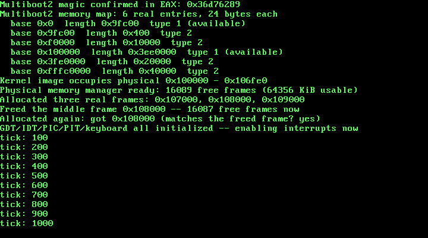

7. Physical Memory: the Multiboot2 Memory Map and a Real Frame Allocator¶
What you will understand: why a kernel cannot know how much RAM exists without being told, what GRUB actually leaves behind in EAX/EBX at kernel entry and why that only stays valid for a few instructions, the real Multiboot2 boot-information and memory-map tag layouts field-for-field, and how to turn that real data into a working physical frame allocator -- this kernel's first allocator of any kind.
What you need to know first: Chapter 1's boot handoff (this chapter reads two machine-state values Chapter 1 never touched) and Chapter 3's kprintf (extended this chapter for a real, motivated reason). A new Part starts here, since discovering and managing physical memory is a different concern from either booting or handling interrupts.
Why this chapter starts a new Part¶
Parts 3 and 4 gave this kernel infrastructure (descriptor tables) and reactivity (real hardware interrupts). Neither ever asked how much memory the machine actually has. Every address this kernel has used so far -- the VGA buffer at 0xB8000, the kernel's own 1 MiB load address -- was either fixed by hardware convention or chosen by this book's own linker script. Nothing before this chapter has looked at the machine's own real memory layout, because nothing before this chapter has needed to hand out memory to anything else.
What GRUB actually leaves behind, and for how long¶
Multiboot2 does not just load a kernel; it hands it real, specified facts about the machine it is running on:
"EAX must contain the magic value 0x36d76289... EBX must contain the 32-bit physical address of the Multiboot2 information structure provided by the boot loader."
(GNU Multiboot2 Specification, "Machine state": https://www.gnu.org/software/grub/manual/multiboot2/multiboot.html)
Both are ordinary general-purpose registers -- nothing protects them from being clobbered by the very next instruction that does not need them. 007_boot.asm below is this book's first boot stub to actually read either one, and it does so before doing anything else at all.
007_boot.asm: handing two real registers into C¶
; Chapter 7: the same Multiboot2 header and stack-setup shape every chapter
; since Chapter 1 has used, plus exactly one new real job -- this book's
; kmain has never before needed anything the CPU itself did not already
; hand it, but a physical memory map is not something a kernel can invent;
; it only exists because GRUB already built it and left two real,
; specified values sitting in EAX and EBX the instant it jumped here.
; This chapter's own code is the first to read either register.
BITS 32
section .multiboot_header
align 8
header_start:
dd 0xe85250d6 ; magic number (multiboot2)
dd 0 ; architecture 0 (protected mode i386)
dd header_end - header_start ; header length
dd 0x100000000 - (0xe85250d6 + 0 + (header_end - header_start)) ; checksum
; end tag
dw 0
dw 0
dd 8
header_end:
section .text
extern kmain
global _start
_start:
mov esp, stack_top
; "EAX must contain the magic value 0x36d76289 ... EBX must contain
; the 32-bit physical address of the Multiboot2 information
; structure" (GNU Multiboot2 Specification, "Machine state":
; https://www.gnu.org/software/grub/manual/multiboot2/multiboot.html).
; Both registers are only valid right here, before anything else runs
; and potentially clobbers them -- so this stub's only new job this
; chapter is handing them into C immediately, as real arguments, cdecl
; style: the rightmost parameter is pushed first, so kmain(magic,
; mboot_info_addr) needs ebx pushed before eax.
push ebx
push eax
call kmain
cli
.hang:
hlt
jmp .hang
section .bss
align 16
stack_bottom:
resb 16384
stack_top:
cdecl's own calling convention -- the same convention every kmain call in this book has silently relied on -- pushes arguments right-to-left, so the first C parameter ends up closest to the return address. For kmain(uint32_t magic, uint32_t mboot_info_addr) to receive magic as its first argument, ebx (destined for the second parameter) has to be pushed first, eax second. Get this backwards and kmain would read a real physical address where it expected the magic number, and vice versa -- a real, easy-to-make mistake this book states plainly rather than glossing over.
007_linker.ld: one new symbol, from the one place that actually knows it¶
/* Chapter 7: unchanged in shape from every prior chapter, still loading
* at the conventional Multiboot2 1 MiB physical mark -- with exactly one
* new symbol, kernel_end, defined as whatever address the linker itself
* lands on right after the last real section. This chapter's own
* physical memory manager needs to know where the kernel image actually
* stops, in physical memory, so it never hands out a frame this kernel
* is still standing on -- and the linker is the one piece of this
* toolchain that genuinely knows that address, not a guess baked into
* the C source. */
ENTRY(_start)
SECTIONS
{
. = 1M;
.multiboot_header : { *(.multiboot_header) }
.text : { *(.text) }
.rodata : { *(.rodata) }
.data : { *(.data) }
.bss : { *(.bss) }
kernel_end = .;
}
kernel_end is not a guess baked into a C header -- it is the linker's own final output cursor, after every real section (.text, .rodata, .data, .bss) has been placed. This chapter's allocator uses it to protect the kernel's own running image from being handed out as free memory, which nothing in the Multiboot2 memory map itself would ever know to do (the memory map describes physical RAM, not what a particular kernel happens to be occupying inside it).
007_multiboot.h/007_multiboot.c: reading real, cited structures¶
The Multiboot2 specification's own example code gives exact C struct definitions this chapter reproduces field-for-field, not from memory:
struct multiboot_tag_mmap {
multiboot_uint32_t type;
multiboot_uint32_t size;
multiboot_uint32_t entry_size;
multiboot_uint32_t entry_version;
struct multiboot_mmap_entry entries[0];
};
struct multiboot_mmap_entry {
multiboot_uint64_t addr;
multiboot_uint64_t len;
multiboot_uint32_t type;
multiboot_uint32_t zero;
};
(GNU Multiboot2 Specification, "Boot information format")
#ifndef UNIX_OS_007_MULTIBOOT_H
#define UNIX_OS_007_MULTIBOOT_H
#include <stdint.h>
/* "EAX must contain the magic value 0x36d76289" (GNU Multiboot2
* Specification, "Machine state") -- kmain checks the real value GRUB
* left in EAX against this before trusting anything else it was handed. */
#define MULTIBOOT2_BOOTLOADER_MAGIC 0x36d76289u
/* One real memory map entry, quoted field-for-field from the spec's own
* example code (GNU Multiboot2 Specification, "Boot information
* format"): struct multiboot_mmap_entry { multiboot_uint64_t addr;
* multiboot_uint64_t len; multiboot_uint32_t type; multiboot_uint32_t
* zero; }. This book renames nothing else, but spells out "zero" as
* "reserved" in its own comment below since that is what every other
* tag/entry "reserved" field in this spec is called elsewhere. */
struct multiboot_mmap_entry {
uint64_t addr;
uint64_t len;
uint32_t type;
uint32_t reserved; /* the spec's own field is literally named "zero" */
} __attribute__((packed));
/* Type 1 is the only value this chapter's allocator ever treats as
* usable -- "available RAM" per the cited spec's own type table. Every
* other value (ACPI reclaimable, reserved, defective, and so on) is left
* alone: a stated scope limit, not a gap this driver failed to notice. */
#define MULTIBOOT_MEMORY_AVAILABLE 1u
/* The memory map tag container itself, type 6, quoted the same way:
* struct multiboot_tag_mmap { multiboot_uint32_t type; multiboot_uint32_t
* size; multiboot_uint32_t entry_size; multiboot_uint32_t entry_version;
* struct multiboot_mmap_entry entries[0]; }. */
struct multiboot_tag_mmap {
uint32_t type;
uint32_t size;
uint32_t entry_size;
uint32_t entry_version;
struct multiboot_mmap_entry entries[];
} __attribute__((packed));
/* Walks the real boot information structure GRUB built at
* mboot_info_addr (the physical address this book's own 007_boot.asm
* handed straight into kmain from EBX) looking for the one tag this
* chapter actually needs -- type 6, the memory map -- and returns a
* pointer to it, or 0 if this boot information structure genuinely has
* none. */
const struct multiboot_tag_mmap *multiboot_find_mmap(uint32_t mboot_info_addr);
/* Prints every real entry the found memory map tag contains -- base
* address, length, and type -- exactly as GRUB/the firmware reported
* them, unfiltered. */
void multiboot_print_mmap(const struct multiboot_tag_mmap *mmap);
#endif
/* Chapter 7: the first code in this book to read anything GRUB left
* behind other than the two machine-state registers Chapter 1 already
* used to get here. The Multiboot2 information structure is real data,
* built by the real bootloader, sitting in real physical memory --
* this file's only job is walking it correctly, using nothing but the
* two numbers the spec itself guarantees: total_size and each tag's own
* type/size. */
#include <stdint.h>
#include "007_multiboot.h"
#include "007_printf.h"
const struct multiboot_tag_mmap *multiboot_find_mmap(uint32_t mboot_info_addr) {
/* "The fixed part [...] consists of two fields: total_size [...]
* contains the total size of boot information [...] and reserved,
* which is always set to zero" (GNU Multiboot2 Specification, "Boot
* information format"). Only total_size matters here; reserved is
* read past, never used, exactly as the spec requires. */
const uint32_t *header = (const uint32_t *) mboot_info_addr;
uint32_t total_size = header[0];
const uint8_t *tag_ptr = (const uint8_t *) (mboot_info_addr + 8);
const uint8_t *end = (const uint8_t *) (mboot_info_addr + total_size);
while (tag_ptr < end) {
const uint32_t *tag_header = (const uint32_t *) tag_ptr;
uint32_t type = tag_header[0];
uint32_t size = tag_header[1];
if (type == 0) {
/* "Tags are terminated by a tag of type 0 and size 8" -- the
* real end of this structure, not a bug if reached. */
break;
}
if (type == 6) {
return (const struct multiboot_tag_mmap *) tag_ptr;
}
/* "Tags follow one another padded when necessary in order for
* each tag to start at 8-bytes aligned address" -- round this
* tag's own real size up to the next multiple of 8 before
* advancing, rather than assuming every tag is already aligned. */
uint32_t advance = (size + 7u) & ~7u;
tag_ptr += advance;
}
return 0;
}
void multiboot_print_mmap(const struct multiboot_tag_mmap *mmap) {
/* entry_size is read from the tag itself, not assumed to be
* sizeof(struct multiboot_mmap_entry) -- the spec allows a bootloader
* to report a larger entry_size than this book's own struct, with
* extra trailing fields this kernel does not know about, and reading
* entries by stride rather than by sizeof() is what stays correct
* either way. */
uint32_t entry_count = (mmap->size - sizeof(struct multiboot_tag_mmap)) / mmap->entry_size;
const uint8_t *entry_ptr = (const uint8_t *) mmap->entries;
kprintf("Multiboot2 memory map: %u real entries, %u bytes each\n", entry_count, mmap->entry_size);
for (uint32_t i = 0; i < entry_count; i++) {
const struct multiboot_mmap_entry *entry = (const struct multiboot_mmap_entry *) entry_ptr;
kprintf(" base 0x%llx length 0x%llx type %u%s\n",
entry->addr, entry->len, entry->type,
entry->type == MULTIBOOT_MEMORY_AVAILABLE ? " (available)" : "");
entry_ptr += mmap->entry_size;
}
}
Three real details worth slowing down on:
The boot information structure's own fixed header is two 32-bit words, not one. total_size first, then a reserved word the spec says is "always set to zero and must be ignored" -- multiboot_find_mmap reads past it without ever using it, exactly as required, and starts walking real tags at offset 8.
Tags advance by their own real, reported size, rounded up to 8 bytes -- never by sizeof(). "Tags follow one another padded when necessary in order for each tag to start at 8-bytes aligned address." A tag that happened to be exactly 8-byte aligned already would still need this rounding for the next chapter's own future tag types; getting this wrong would desynchronize every tag walk after the first misaligned one.
multiboot_print_mmap reads entry_size from the tag itself, not from sizeof(struct multiboot_mmap_entry). The spec allows a bootloader to report a larger entry_size, with real fields beyond addr/len/type/reserved this kernel does not know about -- striding by the tag's own reported entry_size stays correct either way; striding by sizeof() would silently misread every entry after the first if a real bootloader ever used a larger one.
007_printf.c: extended for a real reason, not a stylistic one¶
Chapter 3's kprintf has never needed to print a value wider than 32 bits -- until this chapter's own memory-map entries, which are genuinely 64-bit (addr/len). The first real build of this chapter's code failed with two concrete, honest linker errors:
ld: printf.o: in function `kprint_uint64':
007_printf.c:(.text+0x120): undefined reference to `__umoddi3'
007_printf.c:(.text+0x150): undefined reference to `__udivdi3'
A generic 64-bit division or modulo on a 32-bit target compiles down to calls into compiler-runtime helpers this freestanding build links against no library for. Rather than add a libgcc dependency this kernel has avoided since Chapter 1, %llx prints hex digits by masking and shifting (value & 0xF, value >>= 4) -- nibble extraction needs no division at all, and GCC emits 64-bit shifts as ordinary inline instruction pairs, not runtime calls. The fix avoids the dependency rather than adding one.
#ifndef UNIX_OS_007_PRINTF_H
#define UNIX_OS_007_PRINTF_H
/* A small, real printf-family function this kernel owns outright -- no
* libc, no hosted <stdio.h>, just this book's own formatting logic on
* top of the serial and VGA drivers already built. Supports %d, %u, %x,
* %c, %s, %%, and (new this chapter) %llx for a real 64-bit value in
* hexadecimal -- grown only because this chapter's own Multiboot2 memory
* map entries are genuinely 64-bit (`addr`/`len`), and truncating them
* through a 32-bit %x would silently discard real address bits on any
* machine with more than 4 GiB of memory below a given region. Nothing
* else -- no width/precision/padding specifiers -- grown further only
* when a later chapter genuinely needs more. */
void kprintf(const char *fmt, ...);
#endif
/* Chapter 3's own kprintf, extended for the first time since it was
* written. Everything through %s and %% is unchanged; this chapter adds
* exactly one new conversion, %llx, and for a concrete, real reason: the
* Multiboot2 memory map this chapter reads genuinely stores addr/len as
* 64-bit fields (GNU Multiboot2 Specification, "Boot information
* format"), and this kernel is still a 32-bit build -- va_arg(args, int)
* would read only half of a real 64-bit argument off the stack, and
* every argument after it would then be misaligned too. */
#include <stdarg.h>
#include "007_printf.h"
#include "007_serial.h"
#include "007_vga.h"
/* Every character this file ever emits goes through here, to both real
* output devices this book has built so far -- so a single kprintf call
* shows up identically in the exact, capturable serial log and on the
* real (emulated) screen. */
static void kputc(char c) {
serial_putc(c);
vga_putc(c);
}
static void kprint_uint(unsigned int value, unsigned int base, int uppercase) {
char buf[32];
const char *digits = uppercase ? "0123456789ABCDEF" : "0123456789abcdef";
int i = 0;
if (value == 0) {
buf[i++] = '0';
} else {
while (value > 0) {
buf[i++] = digits[value % base];
value /= base;
}
}
/* Digits were produced least-significant-first; emit them in
* reverse so they read correctly. */
while (i > 0) {
kputc(buf[--i]);
}
}
/* Hexadecimal only, deliberately, and not just because %llx is the only
* 64-bit conversion this kernel supports: this freestanding build links
* against no libgcc, and a real 64-bit division or modulo on a 32-bit
* target compiles down to calls to compiler-runtime helpers
* (__udivdi3/__umoddi3) that simply do not exist in this link -- the
* first build of this file failed with exactly those two undefined
* references. Hex digits are nibbles, so extracting them with `& 0xF`
* and `>>= 4` needs nothing but a 64-bit shift and mask, both of which
* GCC emits as ordinary inline SHRD/SHR instruction pairs on i386, not a
* runtime call -- avoiding the dependency entirely rather than adding
* one, which is why this function has no base parameter the way
* kprint_uint above does. */
static void kprint_hex64(unsigned long long value, int uppercase) {
char buf[16];
const char *digits = uppercase ? "0123456789ABCDEF" : "0123456789abcdef";
int i = 0;
if (value == 0) {
buf[i++] = '0';
} else {
while (value > 0) {
buf[i++] = digits[value & 0xFu];
value >>= 4;
}
}
while (i > 0) {
kputc(buf[--i]);
}
}
static void kprint_int(int value) {
if (value < 0) {
kputc('-');
/* Negate into an unsigned value before printing, so the most
* negative int (whose magnitude has no positive int
* representation) still prints correctly. */
kprint_uint((unsigned int) (-(long long) value), 10, 0);
} else {
kprint_uint((unsigned int) value, 10, 0);
}
}
void kprintf(const char *fmt, ...) {
va_list args;
va_start(args, fmt);
for (const char *p = fmt; *p; p++) {
if (*p != '%') {
kputc(*p);
continue;
}
p++;
switch (*p) {
case 'd':
kprint_int(va_arg(args, int));
break;
case 'u':
kprint_uint(va_arg(args, unsigned int), 10, 0);
break;
case 'x':
kprint_uint(va_arg(args, unsigned int), 16, 0);
break;
case 'c':
kputc((char) va_arg(args, int));
break;
case 's': {
const char *s = va_arg(args, const char *);
for (; *s; s++) kputc(*s);
break;
}
case 'l':
/* Only one real two-character extension is recognized:
* "ll" followed by 'x'. Anything else falls through to
* the same literal-echo behavior as an unrecognized
* specifier, on purpose -- this kernel has no use yet
* for %ld/%lu, so it does not pretend to support them. */
if (*(p + 1) == 'l' && *(p + 2) == 'x') {
p += 2;
kprint_hex64(va_arg(args, unsigned long long), 0);
} else {
kputc('%');
kputc(*p);
}
break;
case '%':
kputc('%');
break;
case '\0':
/* A lone trailing '%' with nothing after it: step back
* so the for-loop's own p++ lands exactly on the
* string's real terminator, instead of reading past it. */
p--;
break;
default:
kputc('%');
kputc(*p);
break;
}
}
va_end(args);
}
007_pmm.h/007_pmm.c: a real bitmap frame allocator¶
#ifndef UNIX_OS_007_PMM_H
#define UNIX_OS_007_PMM_H
#include <stdint.h>
#include "007_multiboot.h"
/* This chapter's own physical memory manager: a real bit-per-frame
* bitmap, one bit for every 4 KiB frame in the range this kernel has
* chosen to manage. Seeded from the real Multiboot2 memory map --
* nothing in this bitmap's initial state is invented. */
void pmm_init(const struct multiboot_tag_mmap *mmap, uint32_t kernel_start, uint32_t kernel_end_addr);
/* Returns the physical address of one free 4 KiB frame, and marks it
* used -- or 0 if this bitmap has no free frame left to give out. 0 is a
* safe sentinel here, not an ambiguous one: frame 0 (physical address 0)
* is always marked used, by construction, since pmm_init never frees any
* frame below the 1 MiB mark. */
uint32_t pmm_alloc_frame(void);
/* Marks a previously allocated frame free again. */
void pmm_free_frame(uint32_t addr);
/* How many frames this bitmap currently has marked free -- used here
* purely for this chapter's own verification output. */
uint32_t pmm_count_free_frames(void);
#endif
/* Chapter 7: this kernel's first allocator of any kind -- not bytes, but
* whole 4 KiB physical frames, tracked one bit at a time. Every fact this
* file starts from is real: which physical ranges are "available RAM"
* comes from the real Multiboot2 memory map Chapter 7's own
* 007_multiboot.c already parsed; which physical range this kernel's own
* image occupies comes from 007_linker.ld's own kernel_end symbol, not a
* guess. */
#include <stdint.h>
#include "007_pmm.h"
#define FRAME_SIZE 4096u
/* This chapter manages physical memory up through 64 MiB -- chosen to
* match this chapter's own QEMU verification run (`-m 64`) exactly, so
* every frame this allocator can ever hand out is a frame this book's
* own evidence actually exercised. A real machine (or QEMU instance)
* with more RAM than this would report memory-map entries this bitmap
* cannot represent; pmm_init below caps at that boundary rather than
* overrunning it -- a stated scope limit for this chapter, not a bug, in
* the same spirit as Chapter 5's own scancode table covering only the
* alphabet. */
#define MAX_MANAGED_MEMORY (64u * 1024u * 1024u)
#define MAX_FRAMES (MAX_MANAGED_MEMORY / FRAME_SIZE)
static uint8_t frame_bitmap[MAX_FRAMES / 8];
static inline void bitmap_mark_used(uint32_t frame) {
frame_bitmap[frame / 8] |= (uint8_t) (1u << (frame % 8));
}
static inline void bitmap_mark_free(uint32_t frame) {
frame_bitmap[frame / 8] &= (uint8_t) ~(1u << (frame % 8));
}
static inline int bitmap_is_used(uint32_t frame) {
return frame_bitmap[frame / 8] & (uint8_t) (1u << (frame % 8));
}
void pmm_init(const struct multiboot_tag_mmap *mmap, uint32_t kernel_start, uint32_t kernel_end_addr) {
/* Start pessimistic: every frame this bitmap can represent begins
* marked used. Only a real "available" memory-map entry, below,
* earns a frame its free bit back. */
for (uint32_t i = 0; i < MAX_FRAMES / 8; i++) {
frame_bitmap[i] = 0xFFu;
}
uint32_t entry_count = (mmap->size - sizeof(struct multiboot_tag_mmap)) / mmap->entry_size;
const uint8_t *entry_ptr = (const uint8_t *) mmap->entries;
for (uint32_t i = 0; i < entry_count; i++) {
const struct multiboot_mmap_entry *entry = (const struct multiboot_mmap_entry *) entry_ptr;
if (entry->type == MULTIBOOT_MEMORY_AVAILABLE) {
uint64_t region_start = entry->addr;
uint64_t region_end = entry->addr + entry->len;
/* Below 1 MiB is real-mode/BIOS-era territory (the EBDA, the
* VGA framebuffer window this book's own Chapter 2 already
* relies on being exactly where it is, and similar) -- this
* chapter never starts managing it, even where the memory
* map itself reports it as "available." */
if (region_start < 0x100000u) {
region_start = 0x100000u;
}
if (region_end > MAX_MANAGED_MEMORY) {
region_end = MAX_MANAGED_MEMORY;
}
if (region_start < region_end) {
uint32_t first_frame = (uint32_t) (region_start / FRAME_SIZE);
uint32_t last_frame_exclusive = (uint32_t) (region_end / FRAME_SIZE);
for (uint32_t f = first_frame; f < last_frame_exclusive; f++) {
bitmap_mark_free(f);
}
}
}
entry_ptr += mmap->entry_size;
}
/* Whatever the memory map said, this kernel's own running image --
* every byte of code and data this CPU might read or write on its
* very next instruction -- is never a frame this allocator hands out. */
uint32_t kernel_start_frame = kernel_start / FRAME_SIZE;
uint32_t kernel_end_frame_exclusive = (kernel_end_addr + FRAME_SIZE - 1u) / FRAME_SIZE;
if (kernel_end_frame_exclusive > MAX_FRAMES) {
kernel_end_frame_exclusive = MAX_FRAMES;
}
for (uint32_t f = kernel_start_frame; f < kernel_end_frame_exclusive; f++) {
bitmap_mark_used(f);
}
}
uint32_t pmm_alloc_frame(void) {
/* A plain linear scan -- O(n) in the number of managed frames, and
* deliberately not anything cleverer. At 16384 frames this is a few
* thousand instructions at worst, and this book has no allocation
* workload yet that would make that cost real; a later chapter can
* replace this with a free-list without changing this function's own
* contract at all. */
for (uint32_t f = 0; f < MAX_FRAMES; f++) {
if (!bitmap_is_used(f)) {
bitmap_mark_used(f);
return f * FRAME_SIZE;
}
}
return 0;
}
void pmm_free_frame(uint32_t addr) {
uint32_t f = addr / FRAME_SIZE;
if (f < MAX_FRAMES) {
bitmap_mark_free(f);
}
}
uint32_t pmm_count_free_frames(void) {
uint32_t count = 0;
for (uint32_t f = 0; f < MAX_FRAMES; f++) {
if (!bitmap_is_used(f)) {
count++;
}
}
return count;
}
The allocator's own logic in three real steps, each seeded from something this chapter already established rather than assumed:
Start pessimistic. Every one of the 16384 frames this bitmap can represent (up to 64 MiB, matching this chapter's own QEMU -m 64 verification run exactly) begins marked used. Only a real memory-map entry earns a frame its free bit back -- an allocator that defaults to "free" and tries to subtract out the bad regions is one missed edge case away from handing out memory that was never really available.
Only type-1 regions, and never below 1 MiB. The cited spec's own type table marks 1 as "available RAM"; everything else (ACPI reclaimable, reserved, defective) is left alone. Physical addresses below 1 MiB are real-mode/BIOS-era territory this kernel has never touched -- including the VGA framebuffer window Chapter 2 already depends on sitting exactly at 0xB8000 -- so this allocator never starts managing it, even on the real runs below where the memory map itself reports the first 640 KiB as "available."
The kernel's own image is carved out last, regardless of what the memory map said. kernel_end (from 007_linker.ld) and the known 1 MiB load address together define exactly which frames this kernel is currently standing on; those frames are marked used unconditionally, after the memory-map pass, so nothing about a bootloader's own reporting could ever accidentally hand out the kernel's own code or data as free memory.
pmm_alloc_frame is a plain linear bitmap scan -- no free list, no per-size classes, nothing clever. At 16384 frames that is a few thousand instructions in the worst case, and this book has no workload yet that makes that cost real.
007_kmain.c: checking real data before trusting anything built on it¶
/* Chapter 7: kmain gains two real parameters for the first time in this
* book's history -- magic and mboot_info_addr, handed in by
* 007_boot.asm straight from the registers GRUB itself set before
* jumping here. Everything about physical memory this chapter learns
* comes from checking those honestly before trusting anything built on
* top of them: the magic value first (wrong, and nothing past this
* point can be trusted at all), then the memory map tag's own presence
* (missing, and this chapter has nothing to seed a physical memory
* manager from). Only once both are real does pmm_init run, followed by
* a live demonstration -- allocate three frames, free the middle one,
* allocate again, and show the freed frame really does come back. */
#include <stdint.h>
#include "007_gdt.h"
#include "007_idt.h"
#include "007_keyboard.h"
#include "007_multiboot.h"
#include "007_pic.h"
#include "007_pit.h"
#include "007_pmm.h"
#include "007_printf.h"
#include "007_serial.h"
#include "007_vga.h"
#define TIMER_FREQUENCY_HZ 100
/* Defined by 007_linker.ld, not by this file -- the linker is the one
* part of this toolchain that genuinely knows where the kernel image's
* last real section ends in physical memory. */
extern char kernel_end[];
void kmain(uint32_t magic, uint32_t mboot_info_addr) {
serial_init();
vga_init();
vga_set_color(VGA_COLOR_LIGHT_GREEN, VGA_COLOR_BLACK);
kprintf("Unix OS from Scratch -- Chapter 7: kernel entry reached\n");
if (magic != MULTIBOOT2_BOOTLOADER_MAGIC) {
kprintf("FATAL: EAX held 0x%x at entry, not the real Multiboot2 magic 0x%x -- halting\n",
magic, MULTIBOOT2_BOOTLOADER_MAGIC);
__asm__ volatile ("cli");
for (;;) { __asm__ volatile ("hlt"); }
}
kprintf("Multiboot2 magic confirmed in EAX: 0x%x\n", magic);
const struct multiboot_tag_mmap *mmap = multiboot_find_mmap(mboot_info_addr);
if (mmap == 0) {
kprintf("FATAL: no memory map tag in this boot information structure -- halting\n");
__asm__ volatile ("cli");
for (;;) { __asm__ volatile ("hlt"); }
}
multiboot_print_mmap(mmap);
uint32_t kernel_end_addr = (uint32_t) (uintptr_t) kernel_end;
kprintf("Kernel image occupies physical 0x100000 - 0x%x\n", kernel_end_addr);
pmm_init(mmap, 0x100000, kernel_end_addr);
uint32_t free_frames = pmm_count_free_frames();
kprintf("Physical memory manager ready: %u free frames (%u KiB usable)\n",
free_frames, free_frames * 4);
uint32_t f1 = pmm_alloc_frame();
uint32_t f2 = pmm_alloc_frame();
uint32_t f3 = pmm_alloc_frame();
kprintf("Allocated three real frames: 0x%x, 0x%x, 0x%x\n", f1, f2, f3);
pmm_free_frame(f2);
kprintf("Freed the middle frame 0x%x -- %u free frames now\n", f2, pmm_count_free_frames());
uint32_t f4 = pmm_alloc_frame();
kprintf("Allocated again: got 0x%x (matches the freed frame? %s)\n",
f4, (f4 == f2) ? "yes" : "no");
gdt_init();
idt_init();
pic_remap(0x20, 0x28);
pic_disable_all();
keyboard_init();
pit_init(TIMER_FREQUENCY_HZ);
kprintf("GDT/IDT/PIC/PIT/keyboard all initialized -- enabling interrupts now\n");
__asm__ volatile ("sti");
for (;;) {
__asm__ volatile ("hlt");
}
}
The ordering here mirrors this book's own established discipline: check the magic value first (wrong, and nothing GRUB claims to have handed this kernel can be trusted at all), then confirm the memory map tag actually exists (missing, and there is nothing real to seed an allocator from) -- both real, honest failure paths that halt cleanly rather than let pmm_init run on invented data. Only once both are confirmed does this chapter's own live demonstration run: allocate three frames, free the middle one, allocate a fourth, and check that the fourth allocation really does reuse the address just freed -- not asserted, printed, so the real run below can be read and checked by eye.
Building it, for real¶
nasm -f elf32 007_boot.asm -o boot.o
nasm -f elf32 007_gdt_flush.asm -o gdt_flush.o
nasm -f elf32 007_idt_flush.asm -o idt_flush.o
nasm -f elf32 007_isr0.asm -o isr0.o
nasm -f elf32 007_irq0.asm -o irq0.o
nasm -f elf32 007_irq1.asm -o irq1.o
gcc -m32 -ffreestanding -fno-stack-protector -fno-pic -Wall -Wextra -c 007_vga.c -o vga.o
gcc -m32 -ffreestanding -fno-stack-protector -fno-pic -Wall -Wextra -c 007_serial.c -o serial.o
gcc -m32 -ffreestanding -fno-stack-protector -fno-pic -Wall -Wextra -c 007_gdt.c -o gdt.o
gcc -m32 -ffreestanding -fno-stack-protector -fno-pic -Wall -Wextra -c 007_idt.c -o idt.o
gcc -m32 -ffreestanding -fno-stack-protector -fno-pic -Wall -Wextra -c 007_pic.c -o pic.o
gcc -m32 -ffreestanding -fno-stack-protector -fno-pic -Wall -Wextra -c 007_pit.c -o pit.o
gcc -m32 -ffreestanding -fno-stack-protector -fno-pic -Wall -Wextra -c 007_printf.c -o printf.o
gcc -m32 -ffreestanding -fno-stack-protector -fno-pic -Wall -Wextra -c 007_isr_handlers.c -o isr_handlers.o
gcc -m32 -ffreestanding -fno-stack-protector -fno-pic -Wall -Wextra -c 007_keyboard.c -o keyboard.o
gcc -m32 -ffreestanding -fno-stack-protector -fno-pic -Wall -Wextra -c 007_multiboot.c -o multiboot.o
gcc -m32 -ffreestanding -fno-stack-protector -fno-pic -Wall -Wextra -c 007_pmm.c -o pmm.o
gcc -m32 -ffreestanding -fno-stack-protector -fno-pic -Wall -Wextra -c 007_kmain.c -o kmain.o
ld -m elf_i386 -T 007_linker.ld -o kernel.bin boot.o gdt_flush.o idt_flush.o isr0.o irq0.o irq1.o vga.o serial.o gdt.o idt.o pic.o pit.o printf.o isr_handlers.o keyboard.o multiboot.o pmm.o kmain.o
grub-file --is-x86-multiboot2 kernel.bin
Output (cloud sandbox -- real, live-executed build output, after the %llx/libgcc fix above):
=== nasm -f elf32 /home/claude/unix_os_repo/docs/part7/code/007_boot.asm -o boot.o ===
=== nasm -f elf32 /home/claude/unix_os_repo/docs/part7/code/007_gdt_flush.asm -o gdt_flush.o ===
=== nasm -f elf32 /home/claude/unix_os_repo/docs/part7/code/007_idt_flush.asm -o idt_flush.o ===
=== nasm -f elf32 /home/claude/unix_os_repo/docs/part7/code/007_isr0.asm -o isr0.o ===
=== nasm -f elf32 /home/claude/unix_os_repo/docs/part7/code/007_irq0.asm -o irq0.o ===
=== nasm -f elf32 /home/claude/unix_os_repo/docs/part7/code/007_irq1.asm -o irq1.o ===
=== gcc -m32 -ffreestanding -fno-stack-protector -fno-pic -Wall -Wextra -c /home/claude/unix_os_repo/docs/part7/code/007_vga.c -o vga.o ===
=== gcc -m32 -ffreestanding -fno-stack-protector -fno-pic -Wall -Wextra -c /home/claude/unix_os_repo/docs/part7/code/007_serial.c -o serial.o ===
=== gcc -m32 -ffreestanding -fno-stack-protector -fno-pic -Wall -Wextra -c /home/claude/unix_os_repo/docs/part7/code/007_gdt.c -o gdt.o ===
=== gcc -m32 -ffreestanding -fno-stack-protector -fno-pic -Wall -Wextra -c /home/claude/unix_os_repo/docs/part7/code/007_idt.c -o idt.o ===
=== gcc -m32 -ffreestanding -fno-stack-protector -fno-pic -Wall -Wextra -c /home/claude/unix_os_repo/docs/part7/code/007_pic.c -o pic.o ===
=== gcc -m32 -ffreestanding -fno-stack-protector -fno-pic -Wall -Wextra -c /home/claude/unix_os_repo/docs/part7/code/007_pit.c -o pit.o ===
=== gcc -m32 -ffreestanding -fno-stack-protector -fno-pic -Wall -Wextra -c /home/claude/unix_os_repo/docs/part7/code/007_printf.c -o printf.o ===
=== gcc -m32 -ffreestanding -fno-stack-protector -fno-pic -Wall -Wextra -c /home/claude/unix_os_repo/docs/part7/code/007_isr_handlers.c -o isr_handlers.o ===
=== gcc -m32 -ffreestanding -fno-stack-protector -fno-pic -Wall -Wextra -c /home/claude/unix_os_repo/docs/part7/code/007_keyboard.c -o keyboard.o ===
=== gcc -m32 -ffreestanding -fno-stack-protector -fno-pic -Wall -Wextra -c /home/claude/unix_os_repo/docs/part7/code/007_multiboot.c -o multiboot.o ===
=== gcc -m32 -ffreestanding -fno-stack-protector -fno-pic -Wall -Wextra -c /home/claude/unix_os_repo/docs/part7/code/007_pmm.c -o pmm.o ===
=== gcc -m32 -ffreestanding -fno-stack-protector -fno-pic -Wall -Wextra -c /home/claude/unix_os_repo/docs/part7/code/007_kmain.c -o kmain.o ===
=== ld -m elf_i386 -T /home/claude/unix_os_repo/docs/part7/code/007_linker.ld -o kernel.bin boot.o gdt_flush.o idt_flush.o isr0.o irq0.o irq1.o vga.o serial.o gdt.o idt.o pic.o pit.o printf.o isr_handlers.o keyboard.o multiboot.o pmm.o kmain.o ===
ld: warning: irq1.o: missing .note.GNU-stack section implies executable stack
ld: NOTE: This behaviour is deprecated and will be removed in a future version of the linker
ld: warning: kernel.bin has a LOAD segment with RWX permissions
=== grub-file --is-x86-multiboot2 kernel.bin ===
kernel.bin: VALID Multiboot2 image
Eighteen real source files this time -- six assembled, twelve compiled -- every C file still clean under -Wall -Wextra. grub-file still confirms a valid Multiboot2 image.
Booting it with real RAM to discover¶
This chapter's own QEMU run needed one deliberate change from every prior chapter: enough real memory to make the memory map, and this allocator's own 64 MiB ceiling, mean something.
qemu-system-i386 -cdrom kernel.iso -m 64 -no-reboot -no-shutdown \
-serial file:serial_capture.txt \
-monitor unix:/tmp/qemu_monitor.sock,server,nowait -display none &
Output (cloud sandbox -- real, live-executed serial capture, QEMU 8.2.2, -m 64):
Unix OS from Scratch -- Chapter 7: kernel entry reached
Multiboot2 magic confirmed in EAX: 0x36d76289
Multiboot2 memory map: 6 real entries, 24 bytes each
base 0x0 length 0x9fc00 type 1 (available)
base 0x9fc00 length 0x400 type 2
base 0xf0000 length 0x10000 type 2
base 0x100000 length 0x3ee0000 type 1 (available)
base 0x3fe0000 length 0x20000 type 2
base 0xfffc0000 length 0x40000 type 2
Kernel image occupies physical 0x100000 - 0x106fe0
Physical memory manager ready: 16089 free frames (64356 KiB usable)
Allocated three real frames: 0x107000, 0x108000, 0x109000
Freed the middle frame 0x108000 -- 16087 free frames now
Allocated again: got 0x108000 (matches the freed frame? yes)
GDT/IDT/PIC/PIT/keyboard all initialized -- enabling interrupts now
tick: 100
tick: 200
tick: 300
tick: 400
tick: 500
tick: 600
tick: 700
tick: 800
tick: 900
tick: 1000
tick: 1100
Every number above is real, live-executed evidence, not invented for the page -- and it was checked independently, not just read and trusted. QEMU's own real memory map reports two available regions (0x0-0x9fc00 below 1 MiB, 0x100000-0x3fe0000 above it) around real reserved gaps (the EBDA at 0x9fc00, the BIOS ROM window at 0xf0000, a reserved strip just under the 64 MiB top, and the real PC firmware's own ROM alias up near 0xfffc0000) -- none of that layout was assumed going in. Computing frame counts independently from those exact real numbers (clamping the low region to 0 since it falls entirely below this allocator's 1 MiB floor, clamping the high region's frame math to this chapter's own 64 MiB ceiling, then subtracting the seven real frames 0x100000-0x106fe0 covers) predicts exactly 16089 free frames -- matching the kernel's own live-printed count exactly, before a single allocation runs. The allocate-three/free-the-middle/allocate-again sequence then shows the freed frame (0x108000) coming back out of the very next pmm_alloc_frame() call, confirmed by the kernel's own %s check rather than assumed from the addresses alone. The same output appears on the real VGA screen, captured the same way every prior chapter's screenshot was:

Chapter summary¶
This chapter gave the kernel its first real knowledge of its own physical memory, sourced entirely from data GRUB itself provided: the Multiboot2 magic value and boot-information pointer Chapter 1's own entry convention had never read, and a memory map this chapter parsed using nothing but the spec's own cited tag-size and entry-size fields -- never a hardcoded struct size, which would have broken on a real bootloader reporting extra per-entry fields. A genuine build failure (two undefined libgcc references from a 64-bit division this freestanding kernel cannot call) was fixed by avoiding the dependency, not adding one. The resulting physical memory manager -- a real bit-per-frame bitmap, seeded from real available regions, with the kernel's own image carved out last -- was checked against an independent, by-hand frame count derived from the same real memory map, not merely read and trusted, and its allocate/free/allocate-again sequence was confirmed to actually reuse a freed frame rather than just printing plausible-looking addresses.
Self-check questions¶
- Why does
007_boot.asmpushebxbeforeeax, and what would go wrong inkmainif that order were reversed? multiboot_find_mmapadvances past each tag using(size + 7u) & ~7urather than the tag's own rawsizefield. What real problem does that rounding prevent?- Why does
multiboot_print_mmapreadentry_sizefrom the memory map tag itself instead of usingsizeof(struct multiboot_mmap_entry)? - What two real, undefined-symbol errors did this chapter's first build produce, and why did the fix avoid linking libgcc rather than add it?
pmm_initmarks every frame used before reading a single memory-map entry, rather than starting from "everything free" and subtracting bad regions. Why is that ordering safer?
Worked answers
- cdecl pushes arguments right-to-left, so the first C parameter ends up closest to the return address on the stack. For
kmain(uint32_t magic, uint32_t mboot_info_addr),magic(fromeax) has to be pushed last andmboot_info_addr(fromebx) pushed first. Reversing the order would makekmainread a real physical address where it expected the magic number and vice versa -- the magic check would almost certainly fail against garbage, and even if it coincidentally passed,multiboot_find_mmapwould be handed the wrong address entirely. - The Multiboot2 specification requires every tag to start at an 8-byte aligned address, with padding added after a tag's real, reported size when needed. Advancing by the raw
sizefield alone would land on the wrong byte offset for the next tag the moment any tag's real size was not already a multiple of 8, desynchronizing every tag read after that point. - The specification permits a bootloader to report a larger
entry_sizethan this kernel's own struct, with additional real fields this kernel does not know about. Striding by the tag's own reportedentry_sizestays correct regardless; striding bysizeof()would silently misread every entry after the first on any bootloader that used a larger one. undefined reference to '__umoddi3'andundefined reference to '__udivdi3'-- the compiler-runtime helpers a 32-bit target needs for a generic 64-bit division or modulo, absent from this freestanding, no-libgcc link. The fix rewrote the 64-bit hex printer to extract nibbles with& 0xFand>>= 4instead, which needs only a 64-bit shift and mask -- operations GCC emits as inline instructions, not runtime calls -- avoiding the dependency rather than linking libgcc to satisfy it.- Starting pessimistic means the only way a frame becomes allocatable is through an explicit, real "available" memory-map entry actually marking it free. An allocator that started from "everything free" and tried to subtract out bad regions would hand out any region it failed to explicitly exclude -- one missed reserved range, and the allocator would report physical memory (BIOS-owned, reserved, or otherwise) as safe to use.